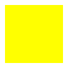
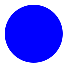
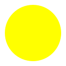
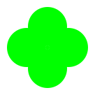
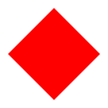
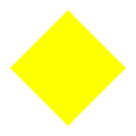
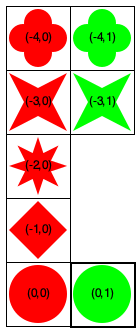
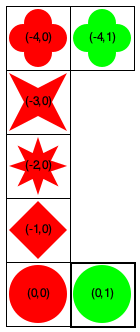
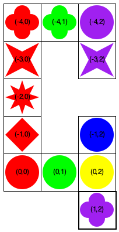

The Q Game
The game is inspired by Qwirkle. the actual game may help develop some intuition but the physical game and the implementation differ.
Most of the time when we discuss ideas, the words “referee”, “player”, and so on refer to software components not people. To remind you of their inanimate nature, it is best to use “its” or “it”—
as in “its game pieces” or “it’s taking its turn.”.
Informal Overview
The Q game is a tile-based game for 2 to 4 players. These players place the tiles on an infinitely large “table.” The square shape of the tiles and the rules of the game induce the notions of row and column on the evolving map formation.
Players place tiles according to rather basic rules. Every placement yields a certain number of points. When a player can use all of its tiles during a single turn, the game ends. The game also ends when all game tiles have been placed or all players pass during a round.
The player with the highest total score wins.
Game Pieces
red
green
blue
yellow
orange
purple
star
8star

square


circle


clover

diamond





Setting up the Game
The referee hands each player six randomly chosen tiles. It then places one tile on the “table.” Once this first tile is placed, the players take turns in descending order of age, starting with the oldest.
The players do not tell each other which tiles they own.
The current scores of the players is public knowledge as is the number of remaining tiles and the order in which they take turns.
Playing a Turn
pass;
exchange all of its tiles for new ones, which is only possible if the referee still has enough tiles;
The referee hands back the same number of tiles, drawn from its own (randomly arranged) collection.
The returned tiles are added to the end of the referee’s collection of tiles, to be handed out in the future as needed.
place at least one tile or several tiles, which are then added to the map in sequential order.
A placement of tiles must satisfy these conditions:every tile placed must share a side with at least one tile on the map that it extends;
every tile placed must match the colors of its immediate neighbors (if any) along a line (row, column) or it must match the shapes along a line;
all tiles placed during a turn must be in the same row or column, though not necessarily adjacent to each other.
The referee hands the player as many tiles as it placed, drawn from its randomly arranged collection or all remaining tiles if the player placed more than the referee has left.
Scoring a Turn A player that passes or exchanges its tiles receives no points.
A player receives one point per tile placed.
A player receives one point per tile in a contiguous sequence of a row or column that at least one of its newly placed tiles extends.
A player receives 6 bonus points for completing a Q, which is a contiguous sequence of tiles that contains all shapes or all colors.
A player also receives 6 bonus points for placing all tiles in its possession.
Ending a Game
The game ends if one of the following condition holds:
at the end of a round if all remaining players pass or replace their tiles;
at the end of a turn if a player has placed all tiles in its possession; or
there are no players left after a turn.